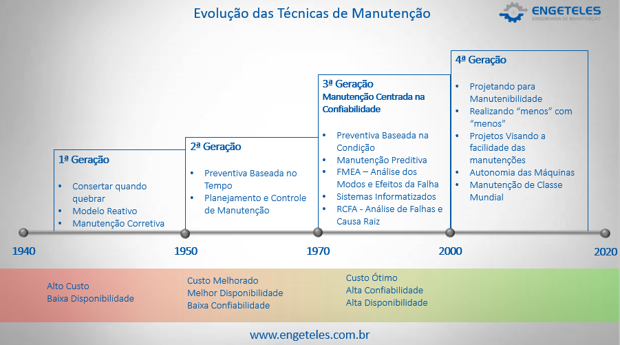
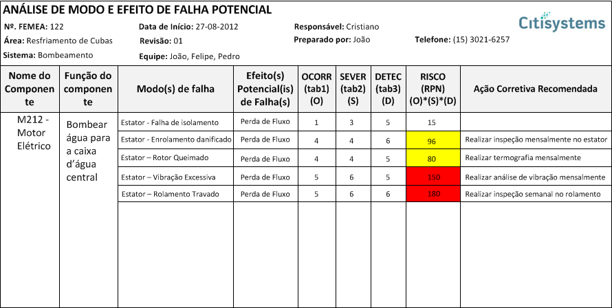
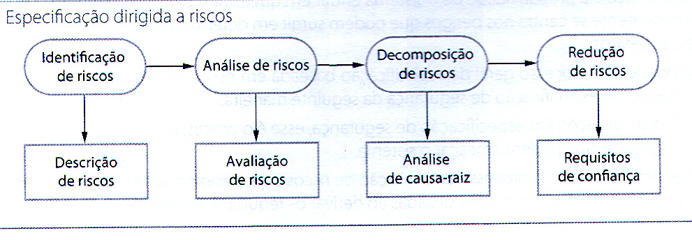
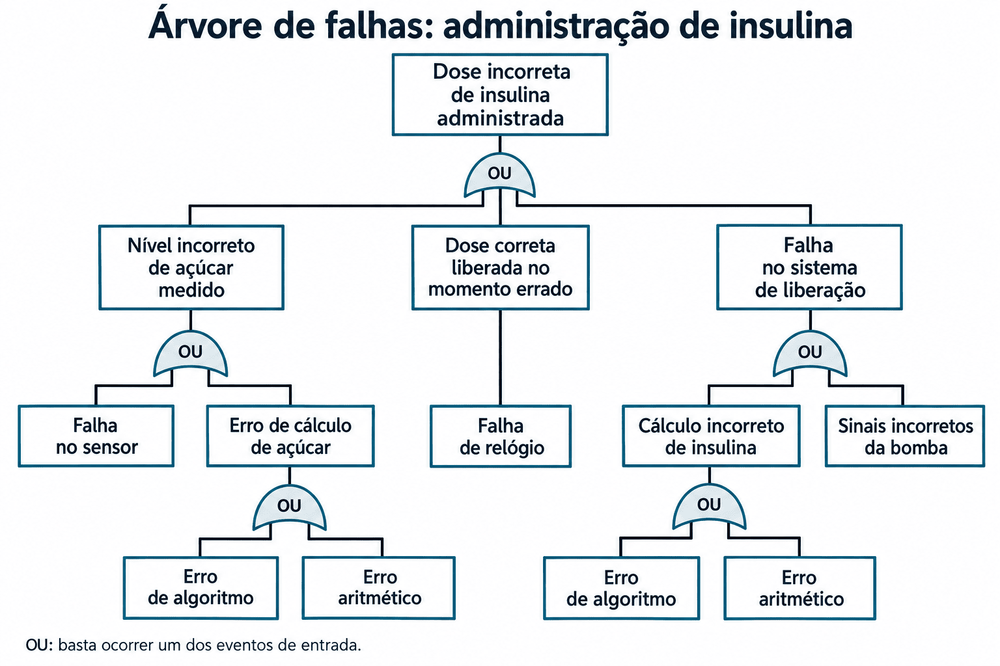
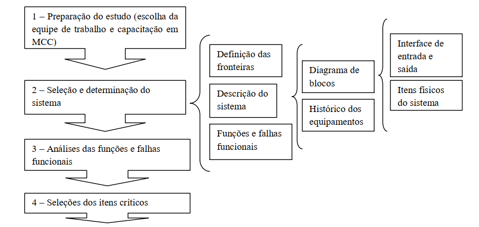
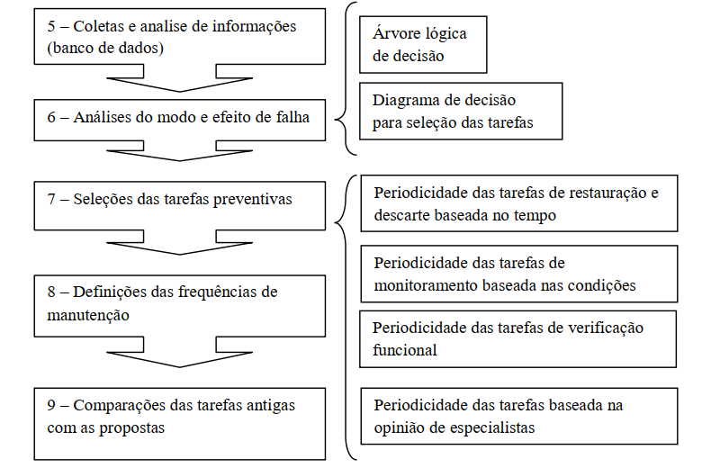

Prevenção
Evitar introduzir defeitos, com práticas de desenvolvimento e análise estática.
Resumo da aula: compreender a função do sistema, avaliar as consequências das falhas e justificar as tarefas de manutenção.
Primeiro, definir a função. Depois, compreender como ela pode falhar e quais consequências isso produz. Essa análise fundamenta a escolha de tarefas, os intervalos e a revisão do plano com os resultados da operação.
A aula conecta manutenção de equipamentos, confiabilidade de software, segurança e proteção de dados: em todos os casos, interessa preservar o serviço exigido no contexto de uso.
A MCC começa pelo serviço que o sistema deve entregar.
A Manutenção Centrada em Confiabilidade (MCC ou RCM) organiza decisões para preservar funções, analisar falhas e escolher tarefas de manutenção efetivas. O desempenho exigido depende do contexto: carga, ambiente, utilização e consequências da interrupção.

Operar sem falhar e estar pronto para operar são medidas diferentes.
| Conceito | Pergunta que responde | Interpretação |
|---|---|---|
| Confiabilidade | O sistema cumpre sua função sem falhas durante um intervalo? | Probabilidade vinculada ao tempo, às condições e à função especificada. |
| Disponibilidade | O sistema está operacional quando solicitado? | Considera a possibilidade de estar em funcionamento após recuperação. |
| Probabilidade de falha sob demanda | Qual a chance de falhar quando houver uma solicitação? | O exemplo 0,001 corresponde a uma chance de 1 em 1.000 por demanda. |
| Taxa de ocorrência de falhas | Quantas falhas ocorrem por unidade de tempo? | Permite acompanhar o comportamento ao longo da operação. |
Cuidado com a simplificação dos slides: o inverso de uma taxa de falha não representa universalmente o tempo médio para falha. Essa relação exige hipóteses específicas sobre o modelo e o significado da taxa utilizada.
Um defeito pode existir sem chegar a interromper o serviço.
| Termo | Significado | Exemplo do material |
|---|---|---|
| Erro humano | Ação ou decisão que introduz um defeito. | Programar a próxima transmissão somando uma hora sem tratar a mudança de dia. |
| Defeito de sistema | Característica interna capaz de produzir estado incorreto. | Código sem verificação da passagem de 23 h para 0 h. |
| Erro de sistema | Estado interno incorreto. | Horário de transmissão definido como 24.xx. |
| Falha de sistema | Serviço entregue fora do esperado. | Dados meteorológicos deixam de ser transmitidos. |
Essa propagação depende das condições. O trecho defeituoso pode não ser executado, um estado incorreto pode ser corrigido antes de afetar o serviço, ou um mecanismo de proteção pode conter o problema.
Evitar introduzir defeitos, com práticas de desenvolvimento e análise estática.
Encontrar e corrigir defeitos por verificação, validação, testes e depuração.
Conter os efeitos de defeitos, por verificações automáticas e redundância.
Tipos de falha apresentados: perda de serviço, entrega incorreta e corrupção do sistema ou dos dados.
A análise relaciona cada modo de falha aos efeitos e às prioridades de ação.
| Elemento | O que registrar | Exemplo aplicado: bombeamento |
|---|---|---|
| Função | Serviço e desempenho exigidos. | Entregar água à vazão especificada. |
| Falha funcional | Incapacidade de cumprir a função no nível exigido. | Vazão abaixo do mínimo. |
| Modo de falha | Evento que provoca a falha funcional. | Rolamento travado. |
| Efeito | O que acontece quando o modo ocorre. | Eixo deixa de girar e o fluxo é interrompido. |
| Consequência | Por que a falha importa. | Interrupção do processo ou comprometimento de uma função de segurança. |
FMEA é a análise dos modos de falha e seus efeitos. A FMECA acrescenta uma análise de criticidade. Elas apoiam a MCC, mas não substituem a seleção de tarefas, intervalos, execução e acompanhamento.
Na pontuação usada nos slides, O representa ocorrência, S severidade e D detecção. As escalas precisam ter critérios definidos. Na convenção usual, maior pontuação de detecção significa maior dificuldade de detectar a falha.
NPR significa Número de Prioridade de Risco. Os percentuais do slide 5 são ilustrativos e não constituem uma distribuição universal de estratégias de manutenção.

As consequências orientam os controles e os requisitos do sistema.
Perigo é uma condição com potencial de causar dano. Acidente é um evento que produz dano. A avaliação do risco considera a possibilidade de ocorrência e a gravidade das consequências.

O comando bimanual de uma máquina de corte exemplifica uma medida para afastar as mãos da zona perigosa.
Detectar pressão excessiva e atuar com válvula de alívio.
Conter as consequências de um acidente por recursos de proteção.
O material distingue riscos intoleráveis, riscos que devem ser reduzidos tanto quanto razoavelmente praticável e riscos aceitáveis. A avaliação acompanha o ambiente, as decisões de projeto e a operação. A ausência de detecção pelo software não elimina um risco.
| Termo | Significado |
|---|---|
| Ativo | Sistema, informação ou outro elemento de valor a proteger. |
| Vulnerabilidade | Fraqueza que pode ser explorada. |
| Ameaça | Circunstância ou agente com potencial de causar dano. |
| Ataque | Ação que explora uma vulnerabilidade. |
| Exposição | Perdas ou danos possíveis. |
| Controle | Medida que reduz a vulnerabilidade ou os efeitos de uma ameaça. |
Uma necessidade de segurança deve resultar em comportamento verificável.
Requisitos não funcionais expressam metas de confiabilidade ou limites de indisponibilidade. Requisitos funcionais definem mecanismos para prevenir, detectar ou tolerar defeitos.
No exemplo didático da bomba de insulina, os requisitos incluem limites por dose e por dia, diagnóstico de hardware, tratamento de exceções, alarmes e suspensão da liberação diante de anomalias. O objetivo é mostrar como perigos originam requisitos de proteção.

A FTA (árvore de falhas) investiga combinações de causas de um evento indesejado. A ETA (árvore de eventos) explora consequências de um evento iniciador conforme a atuação ou falha das barreiras. Ambas apoiam a análise sistemática.
Cada modo de falha exige uma ação aplicável e efetiva.
| Alternativa | Quando a análise pode justificá-la |
|---|---|
| Manutenção baseada na condição | Existe sinal de degradação que pode ser acompanhado para permitir uma intervenção útil. |
| Restauração ou substituição programada | O comportamento da falha e o intervalo escolhido justificam agir por tempo ou uso. |
| Procura de falhas | É necessário verificar funções cuja falha permanece oculta na operação normal. |
| Operar até a falha e corrigir | As consequências são aceitáveis e a análise justifica essa escolha. |
| Reprojeto | As tarefas disponíveis não controlam adequadamente as consequências. |
| Ações pró-ativas | É possível atuar sobre causas e condições que favorecem as falhas. |
A decisão considera consequências para pessoas, ambiente, produção e custos, além da viabilidade técnica. Uma falha oculta pode comprometer uma proteção sem interromper imediatamente a operação.
Perguntas reorganizadas a partir dos slides para explicitar a diferença entre efeito e consequência.
A análise só produz resultado quando vira um plano executado e revisado.
| Etapa do referencial da aula | Resultado esperado |
|---|---|
| 0. Avaliar a adequação | Definir se e onde a MCC é pertinente. |
| 1. Preparar | Organizar equipe, capacitação e condições do estudo. |
| 2. Selecionar o sistema e coletar informações | Delimitar fronteiras, funções e histórico. |
| 3. Elaborar FMECA | Registrar modos de falha, efeitos e criticidade. |
| 4. Selecionar funções significativas | Classificar os modos de falha e suas consequências. |
| 5. Selecionar tarefas | Definir ações aplicáveis e efetivas. |
| 6. Definir intervalos e agrupamentos | Organizar a programação inicial. |
| 7. Documentar e implementar | Converter decisões em procedimentos e execução. |
| 8. Acompanhar e realimentar | Rever resultados e ajustar tarefas e intervalos. |


Cada etapa precisa explicitar objetivos, tarefas, saídas, controles e mecanismos. Os intervalos iniciais devem ser revistos com informações da execução.
Documentável: atividades e registros definidos. Padronizado: critérios consistentes. Auditável: outras pessoas conseguem verificar a execução. Diverso: verificações usam abordagens distintas. Robusto: o processo recupera-se de falhas em atividades individuais.
As questões marcadas como aplicação usam exemplos didáticos derivados dos conceitos. As demais retomam diretamente o material da aula.
Fontes: e.a.eng_manutencao.pptx e e.eng_manutencao.pptx, 36 slides cada, professores Alejandro Martins e Gilson Porciúncula. Os conteúdos textuais e as tabelas coincidem. O resumo consolida as duas fontes, sem duplicá-las.
As figuras reproduzem o material fornecido e mantêm os créditos visíveis. Exemplos aplicados e o cálculo do NPR são complementos didáticos. As perguntas da MCC foram reorganizadas para tornar as distinções conceituais explícitas.
O resumo não reproduz como regra os percentuais ilustrativos do slide 5, não trata ausência de detecção por software como motivo para eliminar riscos e não generaliza a relação entre taxa de falha e tempo médio. As referências normativas citadas nos slides não foram verificadas quanto à edição ou vigência e não são utilizadas aqui para prescrever conformidade.